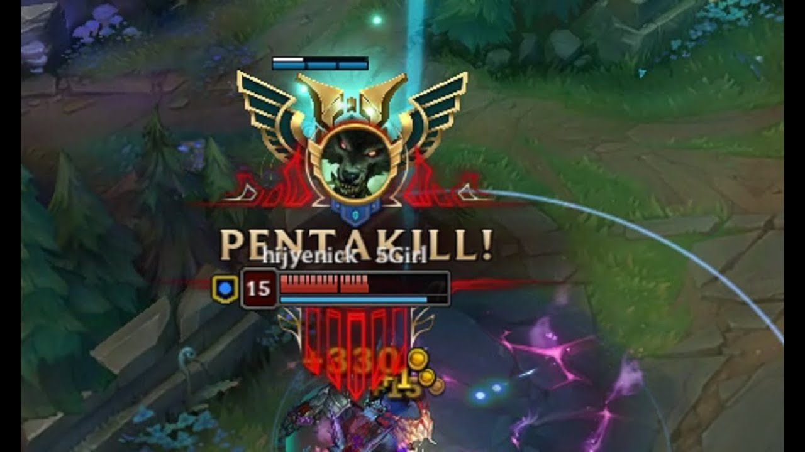
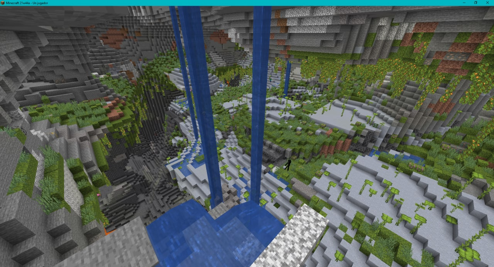
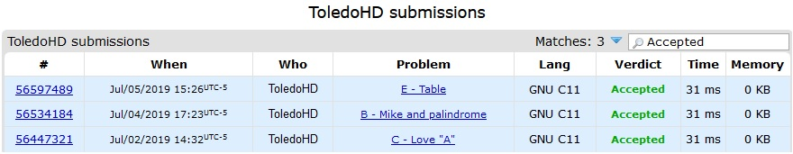
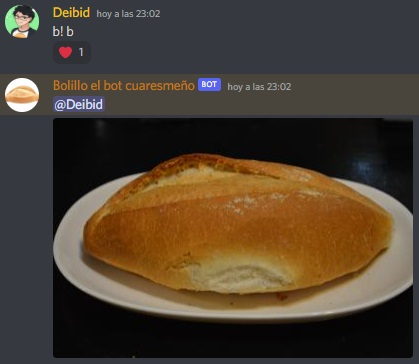

Sobre mí
Me presento, soy David Toledo Heredia, soy introvertido pero no tengo problema tener una conversación interesante con gente nueva, actualmente estoy en el septimo semestre en Ingeniería en Sistemas Computacionales en la Escuela Superior de Cómputo del Instituto Politécnico Nacional. Me apasionan las matemáticas, la programación y la inteligencia artificial.
Pasatiempos
-
VideoJuegos
En ratos libres es divertido jugar con amigos, platicar de la vida y temas de interes entre nosotros.
-
League of legends
Jugar varias partidas en solo o con amigos me hace divertirme por vatias horas.
 -
Minecraft
Especialmente construir con amigos y cooperar es algo que me gusta hacer.

-
-
Entretenimiento japo
He adquirido el gusto por la animación
-
Series anime
Me gustan en general series de acción, me gusta ver la animación de las escenas y las sensaciones que generan con la banda sonora.

-
Películas
Las peliculas que más me han interesado son las de Makoto Shinkai.
-
Manga
De los mangas que me interesan son los que cuentan historias donde no sea necesario tanto movimiento, completamnete contrario a las series.

-
-
Programación
Generalmente cuando busco activar mi mente o encontrar un reto resuelvo problemas o hago distintas implementaciones en distintos lenguajes de programación.
-
Concursos
Algunas veces me gusta resolver algunos problemas de programación ya sean de lógica o metodos especificos.
 -
Bots Discord
En mi tiempo libre también busco aprender nuevos lenguajes de programación e implementaciones.

-
Formación académica
2015
|
2018
Centro de Estudios Científicos y Tecnológicos No. 9
Técnico en Sistemas Digitales
2018
|
Hoy
Escuela Superior de Cómputo
Ing. en Sistemas Computacionales
Esteganografía
La esteganografía estudia todas las posibles técnicas utilizadas para insertar información sensible dentro de otro fichero, denominado "fichero contenedor" (que podría ser un gráfico, un documento o un programa ejecutable), para tratar de conseguir que pueda pasar inadvertida a terceros, y sólo pueda ser recuperada por parte de un usuario legítimo empleando para ello un determinado algoritmo de extracción de la información
Mediante las técnicas esteganográficas no sólo se modifica el contenido de la información, sino que también se intenta ocultar su propia existencia, por lo que podríamos considerarlas como unas técnicas de "camuflaje" de la información.
Desde la más remota antigüedad se han venido empleando distintas técnicas esteganográficas para ocultar la información, como podrín ser las tintas invisibles: así, por ejemplo, en la época de los griegos y de los romanos se empleaba el jugo de limón para escribir información sensible en papiros, de modo que esta tinta sólo se mostraba al someter el documento al calor, pasando inadvertida para aquellos que desconocín esta técnica de "camuflaje".
En el año 1499 Trithemius publicó el que se considera como primer libro sobre Esteganografía. Posteriormente, ya durante la Segunda Guerra Mundial, los alemanes utilizaban micro puntos para ocultar información dentro de documentos impresos, haciéndolos pasar por signos de puntiación.